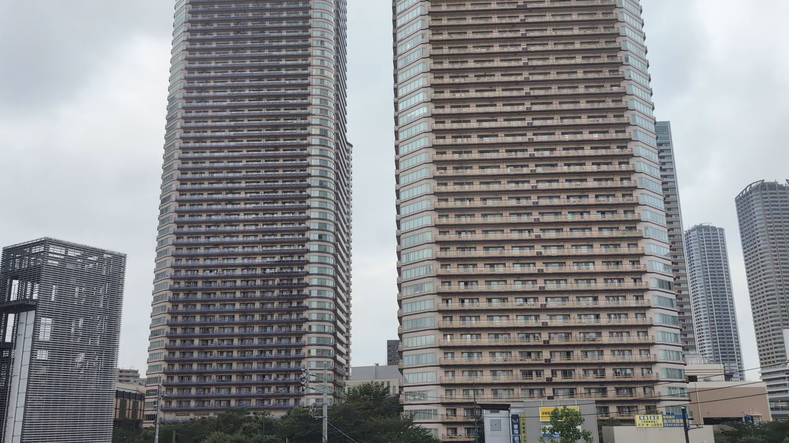
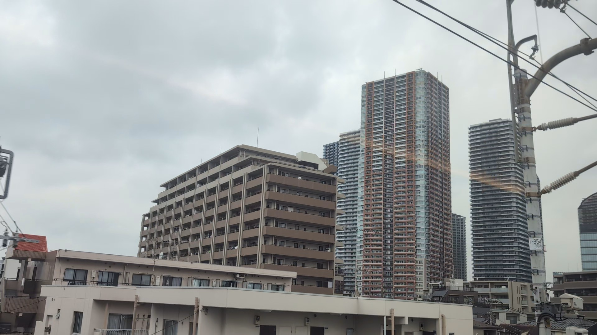
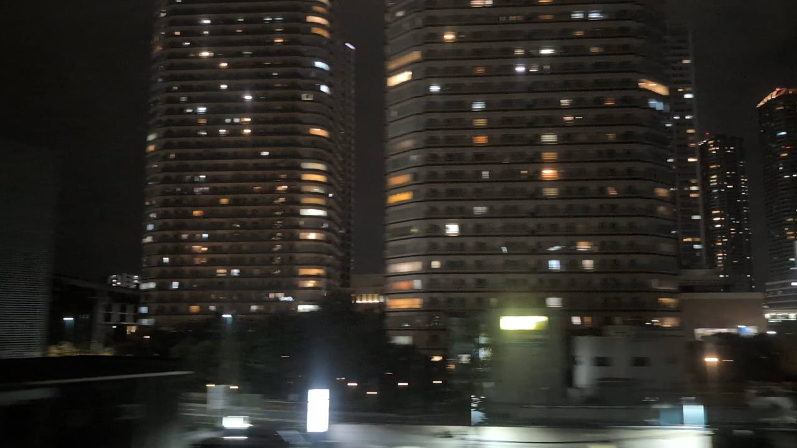

TOKAIDO SHINKANSEN WINDOW VIEW
武蔵小杉のタワマン群はいつ見える？座席側は？
川を越えた、塔の街。

- 見える区間
- 品川 → 新横浜（武蔵小杉付近）
- 座席側
- E席・山側
- タイミング
- 東京発のぞみ基準で約14分後
- 写真
- 3 枚
位置の目安
地図をひらくスポット位置と、新幹線から見る位置を切り替えられます。
武蔵小杉のタワマン群の見つけ方
東京から新大阪へ向かうと、丸子橋を過ぎてすぐ、E席側に武蔵小杉のタワマン群が迫ります。多摩川の開けた景色から、縦に伸びる街へ一気に切り替わる瞬間。名所というより、首都圏の密度をそのまま見せる車窓です。昼は建物の高さが、夜は窓明かりの層が印象に残ります。
東京から新大阪方面へ向かう場合は、品川 → 新横浜（武蔵小杉付近）が近づいたらE席・山側の窓を少し早めに見てください。新大阪から東京方面へ向かう場合は、通過順が逆になります。
東海道新幹線の車窓としてのポイント
武蔵小杉のタワマン群は、富士山だけではない東海道新幹線の車窓を楽しむための見どころです。列車の速度が速いため、見える時間は短く、天気や座席位置によって見え方が変わります。
写真で見る武蔵小杉のタワマン群

